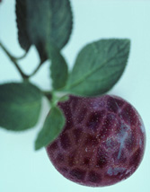
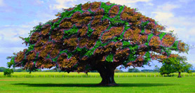
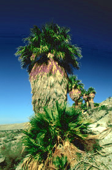

Pjert [Glounucta pjertis];
| Le pjert est une plante à noix de la famille des glounuctacés reconnaissable à ses branches couleur de ragoût de boulette. Cette plante est remarquable par son mode de reproduction. Pendant la saison des amours le pjert en rut lance un retentissant croassement pour attirer la femelle. Lord Bilodeau dans son célèbre traité "Cinq ans parmi les pjerts de la région de Cabano" a enregistré des croassements de pjert pouvant atteindre les 85 décibels. |
Feuille de Pjert |
|
 Boule de mluf |
Quand la femelle est séduite par le cri d'un mâle elle ouvre sa tuyère et lance des boules de mluf dans toutes les directions. Ce spectacles est absolument magnifique comme en en fait fois cette ravissante description de Lord Bilodeau.
|
|
Le mâle tente alors par tous les moyens d'attraper les boules de mluf dans sa poche ventrale. Lorsque le pjert mâle choisi par la femelle "croque" une boule, la boule émet un sifflement qui correspond exactement au croassement du mâle. La boule se met à fondre et le pjert sécrète l'huile de pjert par ses racines pour fertiliser la femelle.  |
 Arbre Male |
|
Noix de Pjert |
Des que les racines de la femelle entrent en contacte avec l'huile de pjert, elle perd ses noix. Lord Bilodeau raconte qu'en Polygonie du sud le pouding aux noix de pjert est un met fort prisé. Si par malchance un pjert croque une boule de mluf qui ne lui est pas destinée, la boule ne fondra pas et il devra attendre l'automne au moment où il perdra sa poche. D'ou l'expression "avoir les boules." Le pjert est la plante croassante officielle de l'empire. |